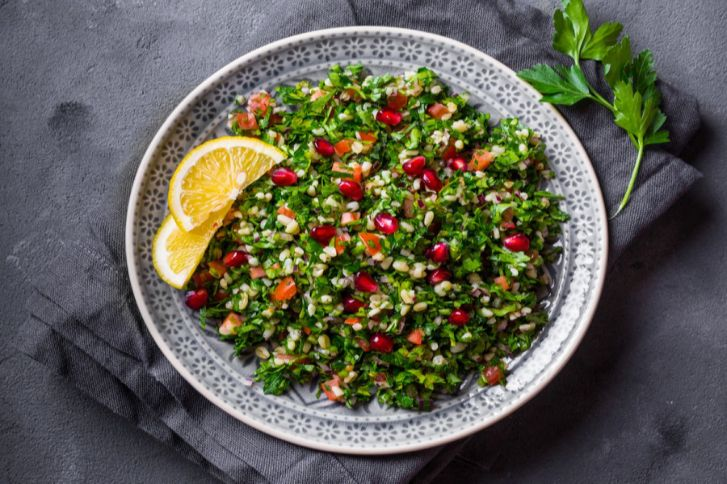

Vorspeise
Tabuleh

Zutaten: für 4 Personen
- 50 g Bulgur
- 400 g feste Tomaten
- 2 Bund Petersilie
- 1 kleines Bund Minze
- 5 EL Olivenöl
- 1 1/2 Zitronen
- prise Salz
Zubereitung
- Bulgur mit 100 ml Wasser zum Kochen bringen,
den Topf dann abdecken und bei geringer Hitze ca. 10 Minuten quellen lassen,
dabei nimmt der Bulgur das Wasser komplett auf.
Zum Abkühlen in eine große Salatschüssel geben.
- Tomaten waschen, Stielansatz entfernen und in Würfel schneiden.
Petersilie und Minze waschen, trocken schütteln,
die Blättchen abzupfen und hacken.
Frühlingszwiebeln waschen und in sehr feine Scheiben schneiden.
Alles zum abgekühlten Bulgur geben.
- Olivenöl über den Salat träufeln. Zitronen halbieren und den Saft auspressen.
Salat mit Zitronensaft, Salz und Pfeffer abschmecken.